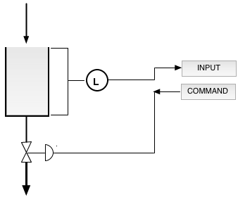

Return to Web Labs at ReactorLab.net
Level Control in a Water Tank
There are three process units: a water source that empties into a tank, a
tank with a variable-flow outlet valve, and a feedback controller. The controller
controls the water level by sending a command to the valve. The controller has Proportional
and Integral (PI) action with anti-windup The diameter of the tank is 2 m.
Click the Run button to start. Hit the enter key or click out of field after changing inputs.
Set flow rate (m3/s) :
Enter reset time ( > 0 to 40 s)
Enter level setpoint (0-2.5 m)
Enter contoller gain (0-10)